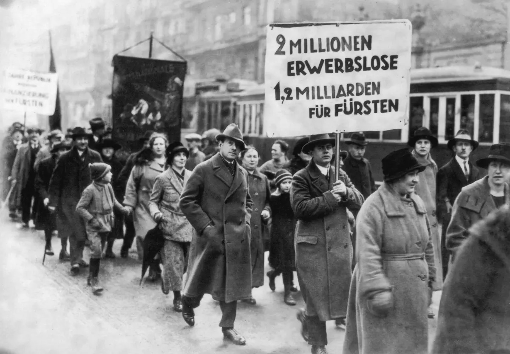

Die Deutsche Wirtschaftskrise
In diesem Abschnitt behandeln wir die zentralen Ursachen und Folgen der Wirtschaftskrise in Deutschland. Im Fokus stehen die Nachwirkungen des Versailler Vertrags und die schwierige Lage der Weimarer Republik nach dem Ersten Weltkrieg. Viele Menschen waren damals unzufrieden mit der politischen Führung, da hohe Reparationszahlungen, Inflation und Arbeitslosigkeit die Gesellschaft stark belasteten.
Ein Einblick in die aktuellen Herausforderungen

Hauptteil 1
Der Versailler Vertrag zum Untergang der Waimarer Republik Die Bevölkerung in der Weimarer Republik war kurz nach dem ersten Weltkireg unzufrieden mit der demokratischen Regierung. Die Gründe dafür waren vielseitig. Unter anderem spielte der Versailler Vertrag die Außenpolitik und vieles mehr eine große Rolle. In der jungen weimarer Republik war die politische Lage recht angespannt. Die soziale Lage war sehr kritisch, da die Menschen aufgrund der Hyperinflation sehr arm waren. Sie vertrauten der Demokratie nicht und wandten sich immer mehr rechten Gruppierungen zu. Darunter auch der noch jungen NSDAP. Der Grund dafür liegt vorallem in den Nachfolgen des ersten Weltkrieg und des Versailler Vertrag. Da Deutschland nach dem Krieg mit Sanktionen Reperaturzahlungen und der Verkleinerung der Armnee belegt wurde und außerdem die Wehrpflicht abgeschafft wurde war die Bevölkerung sehr unzufrieden mit der demokratischen Regierung.
Hauptteil 2
Die Schuld am Krieg und die Inflation Deutschland und seine Verbündeten wurden von der Alliierten komplett für den Krieg verantwortlich gemacht und mit Reparationszahlungen sowie mit der "Wiedergutmachung" für die Kriegsverluste belegt. Durch diese enormen Reparaturzahlungen verlor die damalige deutsche Reichsmark stark an Wert. Dadurch war die Bevölkerung unzufrieden und verlor das Vertrauen in die Regierung. Viele Deutsche dachten, sie könnten den Krieg noch gewinnen und fühlten sich von der Regierung verraten.
Hauptteil 3
Durch die Inflation waren die Menschen arm. Sie klauten Bauern Lebensmittel. Der Monatslohn reichte manchmal nicht für ein Brot, und so sank das Vertrauen in die Regierung. Dazu kamen die Handelssanktionen, die Deutschland von den Alliierten auferlegt wurden.
Die Menschen forderten eine starke Regierung, die die Republik wieder in eine gute Zeit führen kann. Die rechten Parteien wie die NSDAP versprachen den Bürgern eine solche Regierung, weshalb der Zuspruch für diese Parteien stieg.
Fazit
Der steigende Zuspruch der rechten Parteien rund um die NSDAP wurde zur Gefahr für die Weimarer Republik und die Demokratie. Das begünstigte auch den steigenden Machtanspruch und den Aufstieg von Adolf Hitler. Abschließend lässt sich sagen, dass durch die Richtlinien, die Deutschland durch den Versailler Vertrag auferlegt wurden, der Zuspruch für die rechten Parteien stieg und die Akzeptanz für die Demokratie sank.